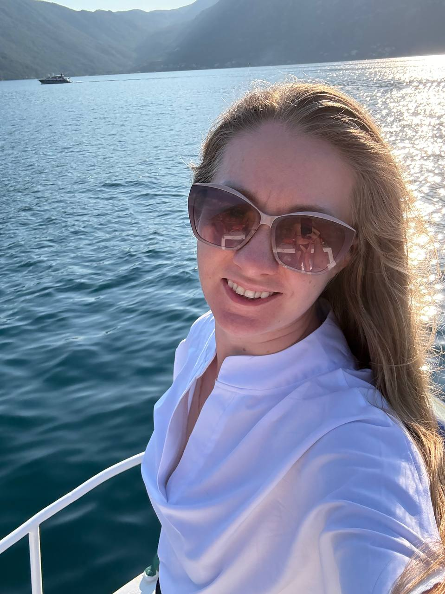
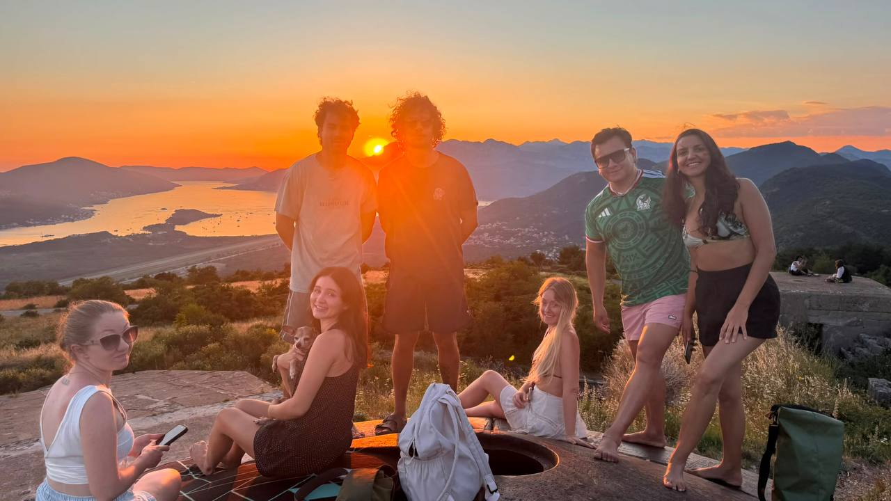
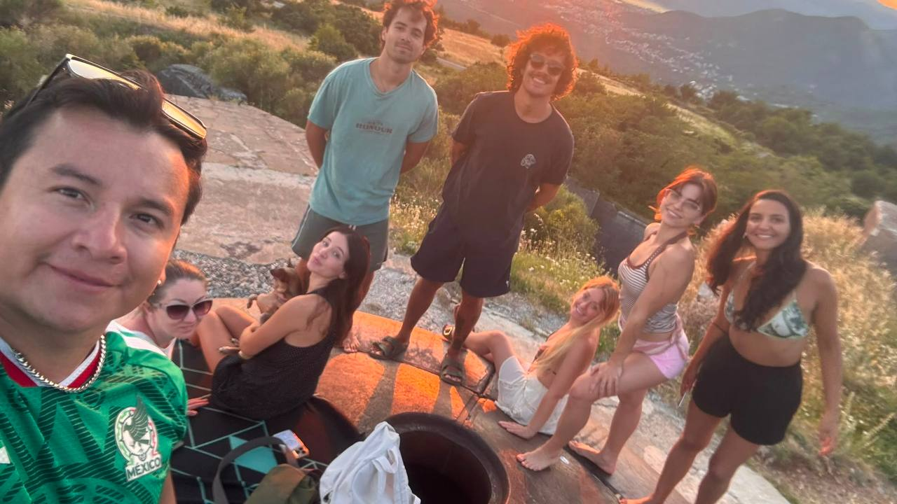
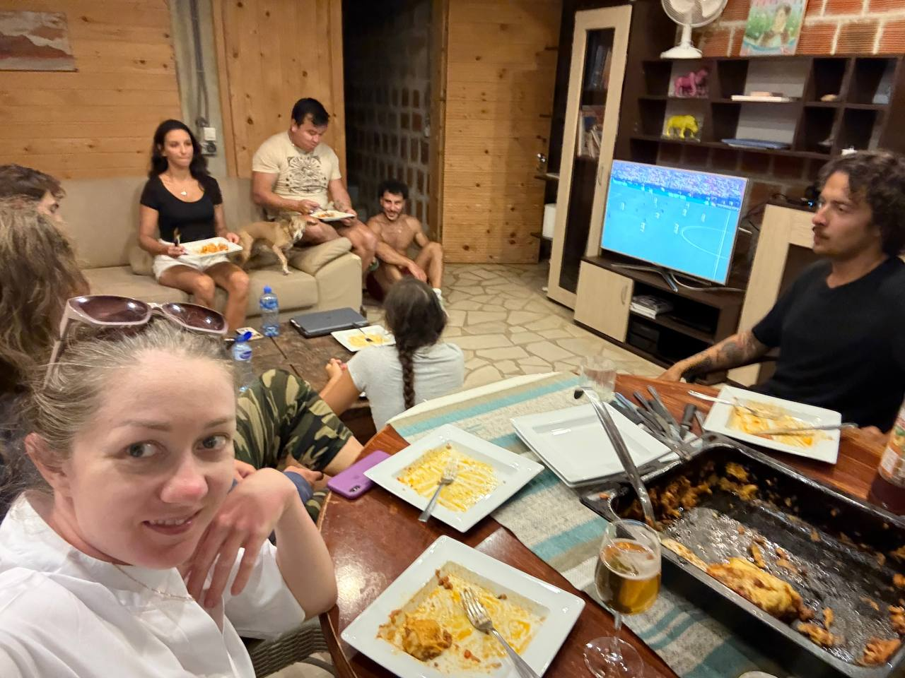
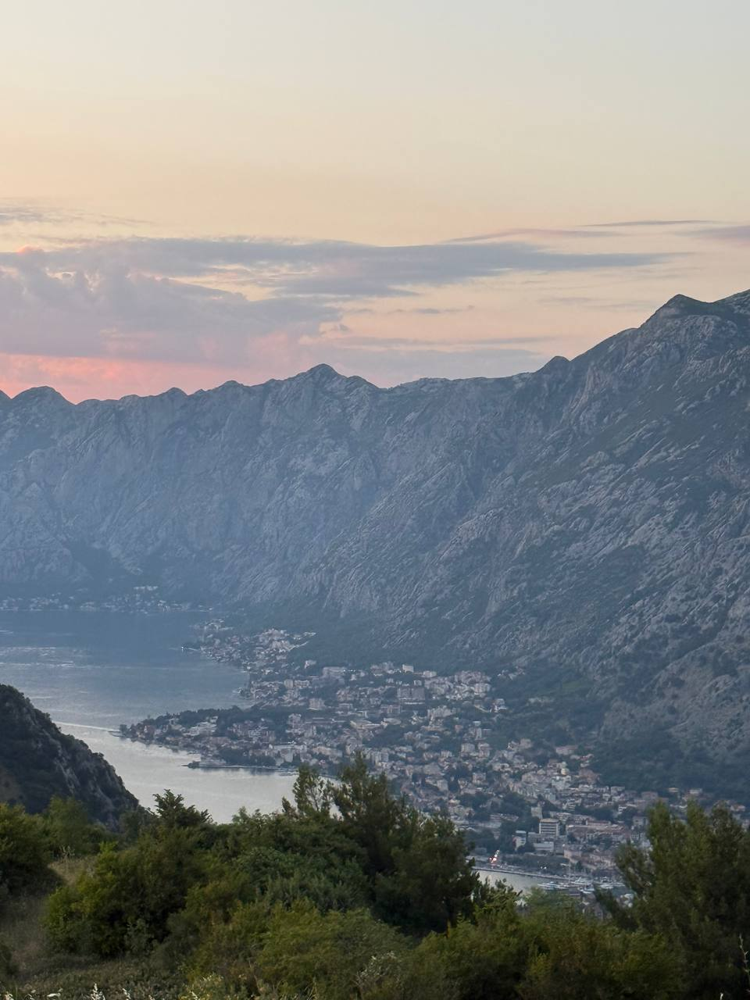
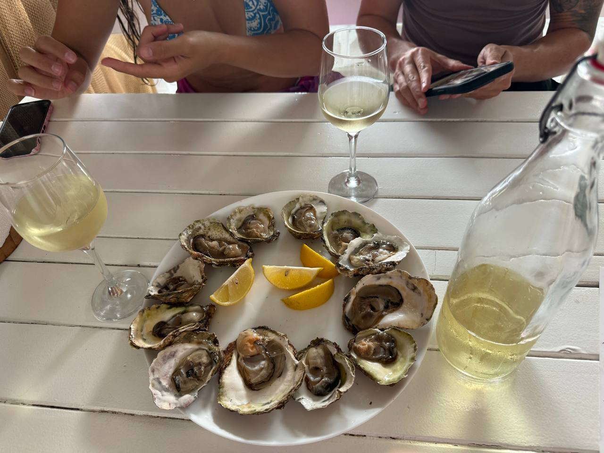
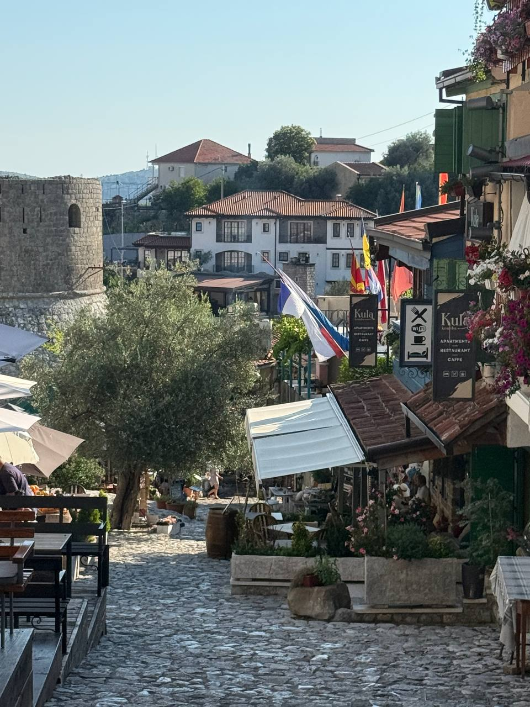
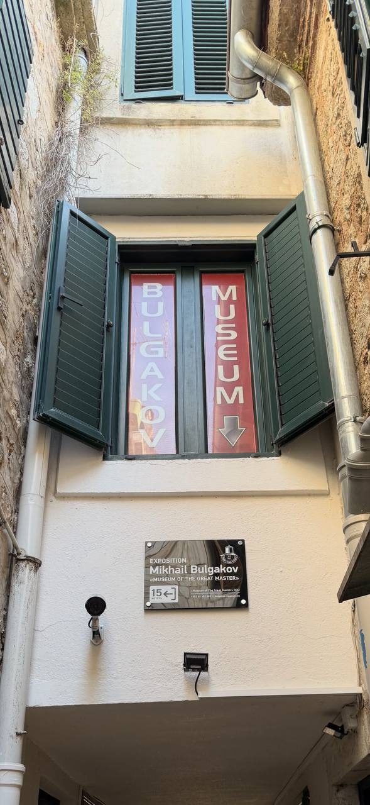
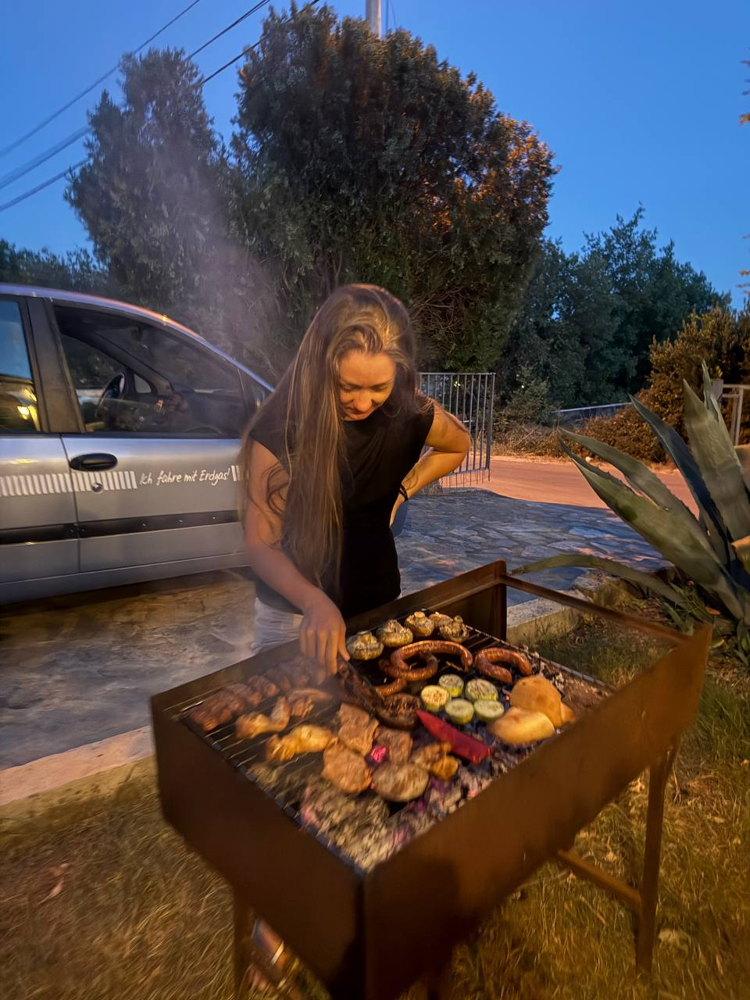
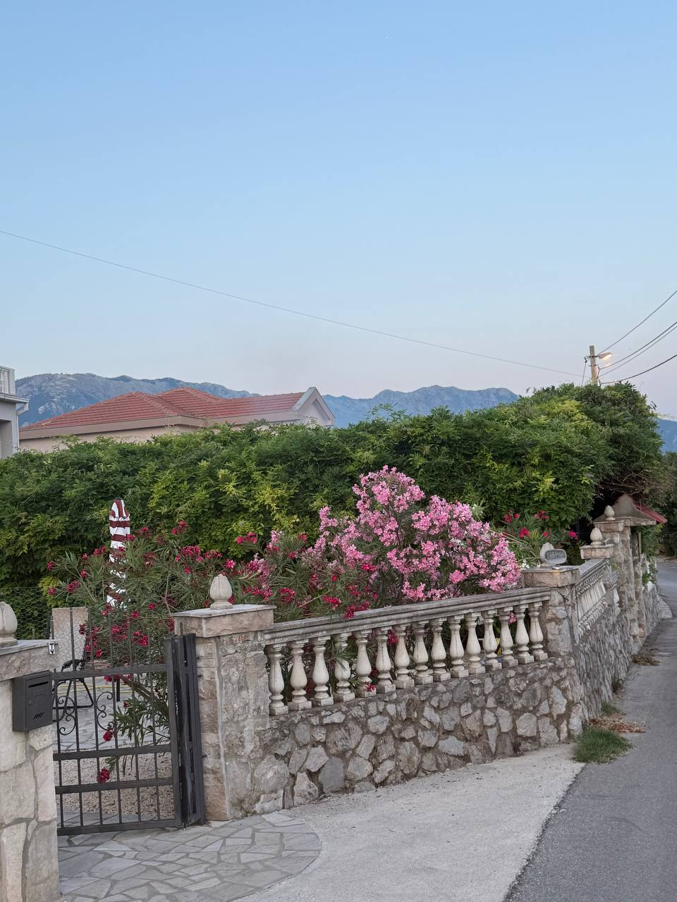

Playworking — лагерь, который я нашла случайно
Я не искала ничего особенного. Я искала чтобы совпали цена и качество — арендованная комната, нормальный интернет, море где-нибудь рядом. Получила сильно больше: классную компанию, практику английского на три недели и ощущение, которого у меня давно не было — что у меня есть коллеги. Это пост про лагерь Playworking на Луштице (Черногория) и почему я так хочу, чтобы это лето не кончалось.

Как я тут оказалась
Если коротко — случайно. Я искала место в Черногории, где можно три недели нормально работать удалённо, чтобы цена не была как в Дубае, а интернет не падал каждый второй час. Playworking появился в подборке среди прочих — я кликнула без особых ожиданий.
Потом я приехала. И вместо «арендованной комнаты с интернетом» оказалась в доме, где живут восемь человек со всего света, у каждого свой ноут, свой часовой пояс и свой проект — но к вечеру все спускаются на общую кухню, кто-то жарит пасту, кто-то достаёт вино, кто-то ставит футбол на большом экране. И это не «лагерь для туристов», это нормальная жизнь людей, которые временно собрались в одном месте, потому что так удобно работать и не скучно.

Что значит «свои», когда нет коллег
У меня нет своих коллег. То есть формально я не работаю в школе с понедельника по пятницу — я давно перешла на свой формат, веду учеников онлайн, строю свою методику, собираю программу через AI-инструменты. Это удобно и продуктивно — но это одиночная игра.
Здесь оказалось, что когда восемь человек делают свои разные дела в одном пространстве — это уже не одиночество, а параллельная работа. Ты не отвлекаешься на их задачи, но слышишь их голоса, видишь их сосредоточенность, кто-то спрашивает кофе. И в какой-то момент ловишь себя на том, что чувствуешь — здесь у тебя есть коллеги. Не такие, с которыми про KPI говоришь, а такие, с которыми утром здороваешься, а вечером пьёшь чай и обсуждаешь, как день прошёл.
Бонусом — три недели английский language practice без всяких разговорных клубов. Тут просто общий язык дома, потому что не все из России. Утром на завтраке «pass me the bread», к вечеру уже спорите про сезон Премьер-Лиги.


Как устроен день и вечер
Дни — рабочие. Каждый со своим расписанием, каждый со своим ноутом. Я веду уроки, собираю материалы, отвечаю в чатах с учениками — всё то же самое, что в Москве, просто из другой точки. Школа работает потому что система выстроена так, что география не имеет значения: материалы в одном месте, расписание в одном месте, AI-инфраструктура держит конвейер. Я тут — школа там, и всем хорошо.
Вечера — общие. Без обязаловки. Кто-то готовит — все подтягиваются. Включается футбол — собираются вокруг. Кто-то предлагает прокатиться к закату на гору над бухтой — едут вместе. Кто-то открывает заведение с устрицами — узнают что и где. Это не «программа активностей с лидером», это просто живые люди, которые делятся тем, что нашли.
Что нужно, чтобы тоже сюда поехать
- Три недели удалённой работы. Хотя бы. Иначе нет смысла — ты не успеешь войти в ритм, а Playworking — это именно про ритм. Меньше — будет ощущение «приехал и сразу уезжаю».
- Английский уровня примерно B1+. Не C1, не нужно. Просто чтобы понимать общие разговоры, говорить за столом, не зависать в простых фразах. Это и так подтянется за три недели.
- Возможность водить машину. Не обязательно, но сильно проще. Луштица — полуостров, и многое находится в часе езды. Без машины ты привязан к расписанию маршруток.
- Готовность жить рядом с людьми. Своя комната есть, но дом общий. Если тебе нужно полное молчание 24/7 — это не сюда.
Что я поняла за эти три недели
Фраза «я поехала работать в Черногорию» в любом случае звучит красиво. Но интереснее не это. Интереснее, что — оказывается — удалённая работа не обязана быть одинокой, даже если у тебя нет своих коллег. Достаточно один раз приехать в место, где собираются такие же — и ты получаешь и работу, и компанию, и фон, и три недели жизни в чужой стране, которая постепенно становится не очень чужой.
Чтобы повторить — нужно немного: ноут, английский на уровне обычного разговора, паспорт, и три свободных недели. Всё остальное собирается само.



Старый Бар — крепость, в которую я бы не поехала
Я бы пропустила его, конечно, но ИИ настаивал, что он тут есть. Тут никто не живёт — это вроде просто крепость и старые стены вокруг. И вот что странно — работает. Не как открытка, а как место, у которого никто не отнимает покоя.
Тут растёт самое старое оливковое дерево Европы, около 2000 лет: бессмертная бабка с характером, пережила империи, войны, венецианцев, османов, Югославию — и всё ещё стоит.
Минимум — обойти улицу у входа, каменные домики, арки. Попить чайку под стенами — огонь.
Последние дни на Балканах — немного Булгакова
На Балканах я случайно увидела «BULGAKOV MUSEUM» между жалюзи и водостоком. Экспозиция «Museum of the Great Master» — прямо в Черногории. Думаю, все дело здесь в том, что здесь очень много русскоговорящего населения и всем очень хочется культурно просвещаться.

А через сутки Москва. Погода стандартная, прощай солнышко, низкое небо, серая драма :)))

Опыт показывает, что если выкладывать посты в обратном порядке, то всё как будто бы откатывается обратно к первому дню, когда я только приехала.

Привезла домой пластинку Колтрейна. Она стала моментально достоянием всего аэропорта :))) каждый подошел и спросил, куда это я её везу :))))
Если хочется так же
Сайт лагеря — playworking.me. В моём путеводителе по Черногории — раздел про коворкинги и коливинги с табличкой цен и сравнением альтернатив. А я остаюсь тут до конца отпуска и продолжаю работать в режиме «лето не кончается» — со школой, с уроками, с этим окном на Боко-Которскую бухту за спиной.
Частые вопросы
Что такое Playworking в Черногории?
Небольшой коливинг на полуострове Луштица для удалённых работников. Семь личных комнат с санузлом, оптика 600 Мбит/с, общая кухня и гостиная, бесплатные SUP-доски и велосипеды, общие еженедельные ужины, бесплатный трансфер из аэропорта Тиват. Около €800 в месяц.
Подходит ли Playworking одиночному удалёнщику без коллег?
Да, особенно если у вас нет коллег дома. Базовая схема — параллельная дневная работа в одном доме с людьми из разных стран и часовых поясов, и неформальные вечерние активности. Возвращает ощущение коллектива без необходимости работать в компании.
Что нужно чтобы поехать сюда на три недели?
Три недели реальной удалённой работы, английский уровня примерно B1+ (хватит чтобы понимать общие разговоры за столом — за три недели подтянется), возможность водить (на полуострове сильно проще), и готовность жить рядом с другими людьми.
Как устроена практика английского?
Естественно, три недели подряд, и бесплатно. Жильцы из разных стран — общий язык дома английский. Утром «pass me the bread», к ужину обсуждаете Премьер-Лигу. Без разговорных клубов и упражнений.
Где именно находится Playworking?
На полуострове Луштица, рядом с Тиватом (Боко-Которская бухта), Черногория. Ближайшая точка въезда — аэропорт Тиват, трансфер включён. На машине удобно добраться до Котора, Пераста, Будвы и Старого Бара.
Текст: Мария Бурцева · фото из личного архива · июнь 2026, лагерь Playworking, Луштица, Черногория.